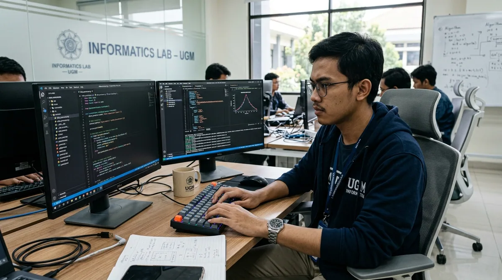
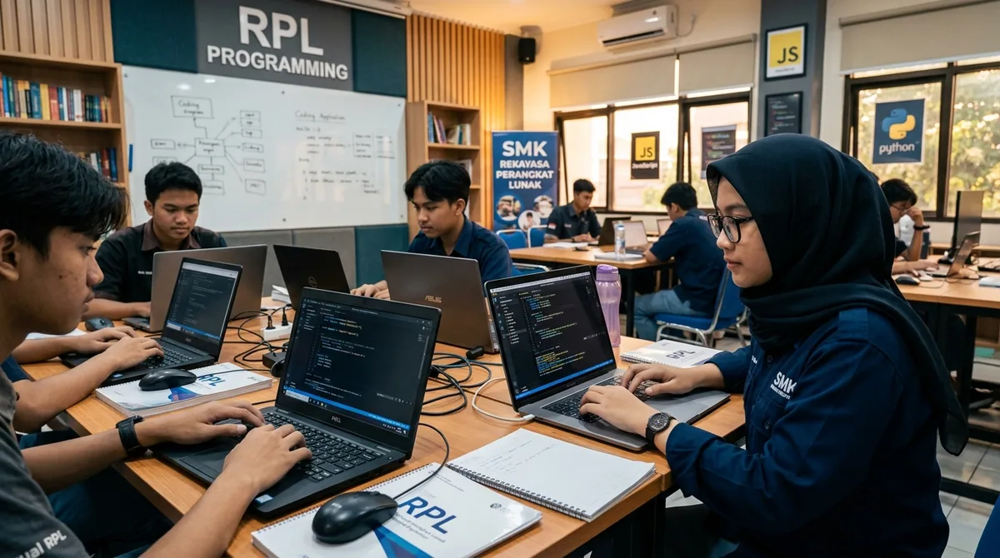
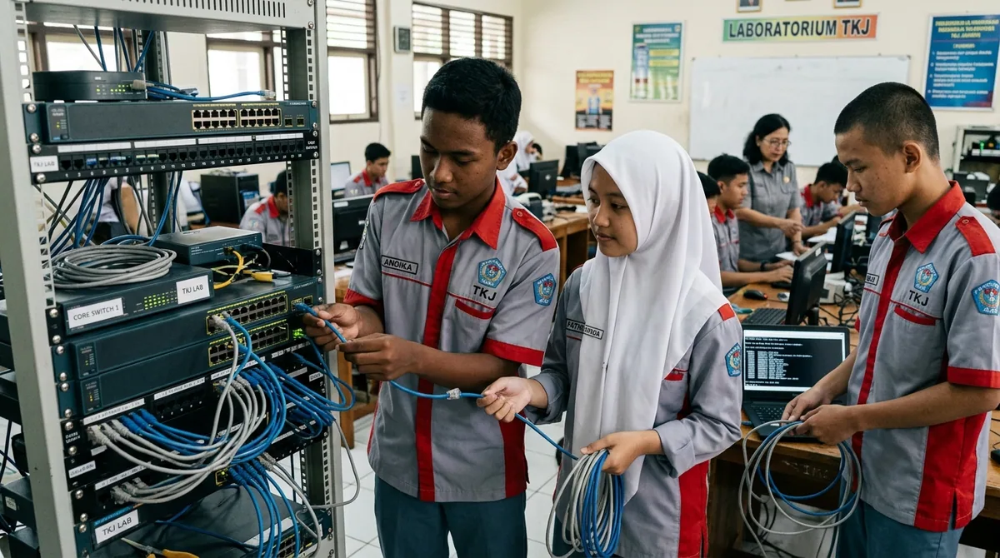
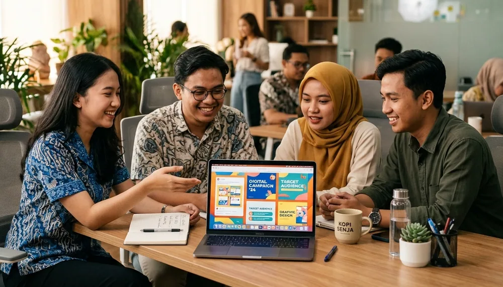
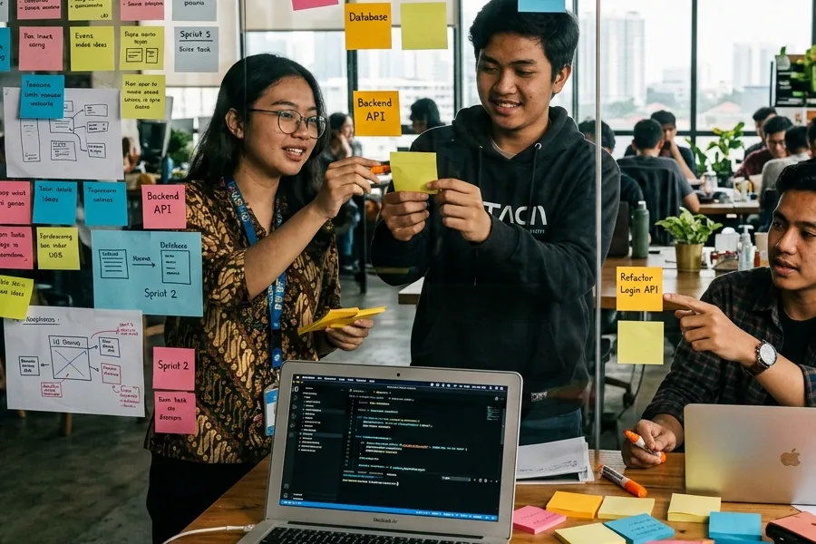
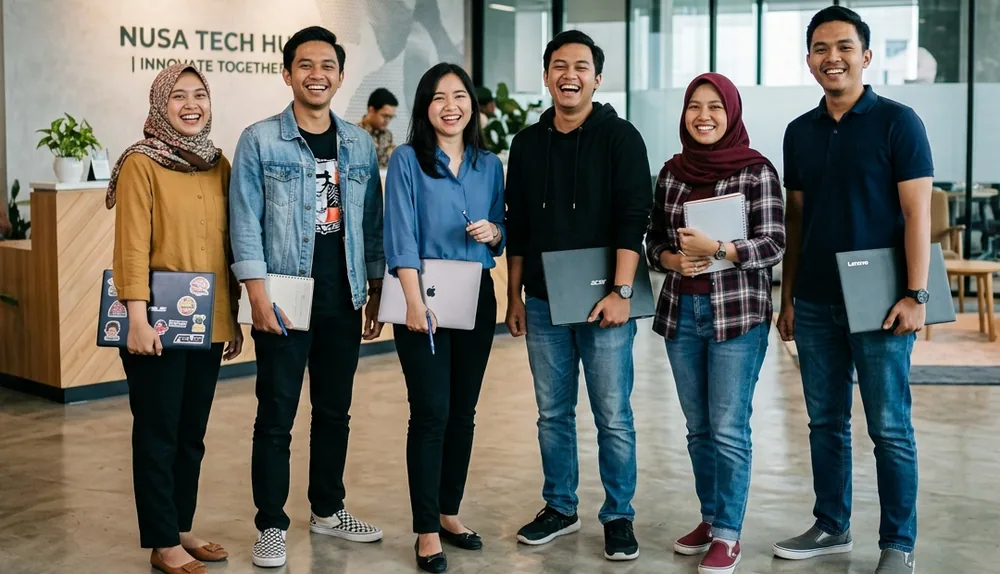
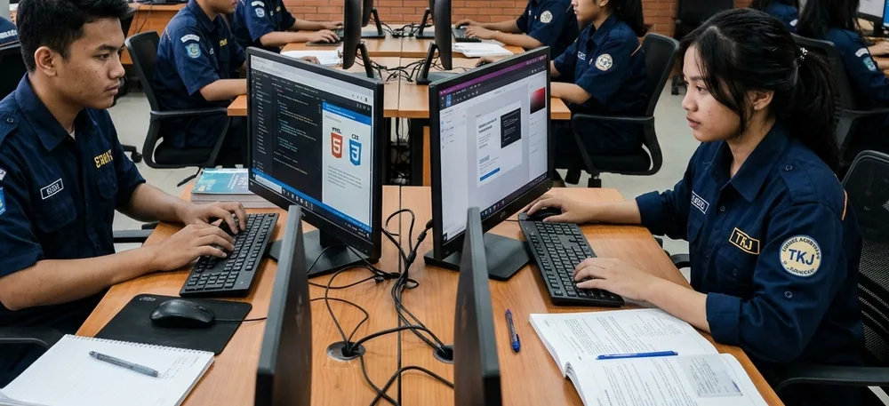
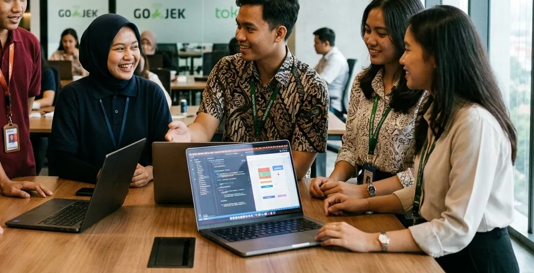
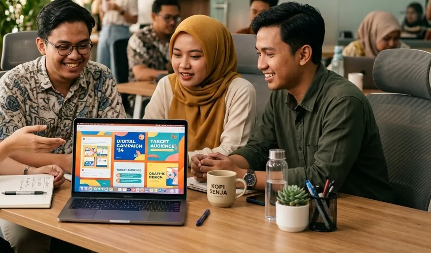

Pilih Bidang atau Jurusan Magang & PKL
Sepuluh bidang di dunia digital dan teknologi. Setiap bidang punya skill, tools, contoh project, dan output yang jelas.
Tools dan contoh project bersifat contoh dan dapat disesuaikan dengan kebutuhan peserta serta ketersediaan program. Kurikulum telah dirancang berdasarkan standar industri terkini, berfokus pada best practice.

Informatika
Memahami dasar komputasi, logika pemrograman, dan cara kerja sistem digital dalam proyek nyata.
Daftar bidang iniSkill yang dipelajari
- Logika & algoritma
- Dasar pemrograman
- Basis data
- Analisis masalah
Tools yang digunakan
- VS Code
- Git & GitHub
- SQL
- Terminal / CLI
Contoh project
- Aplikasi pencatatan sederhana
- Skrip otomasi tugas harian
- Dokumentasi teknis proyek
Output pembelajaran
- Repositori project di GitHub
- Dokumentasi proyek
- Presentasi hasil
Cocok untuk siapa
Siswa/mahasiswa yang suka memecahkan masalah dengan logika dan ingin pondasi teknologi yang kuat.

Rekayasa Perangkat Lunak (RPL)
Belajar pengembangan aplikasi, website, database, dan alur kerja software development.
Daftar bidang iniSkill yang dipelajari
- Pemrograman web & aplikasi
- Database & API
- Version control
- Testing dasar
Tools yang digunakan
- VS Code
- Git & GitHub
- MySQL / PostgreSQL
- Postman
Contoh project
- Aplikasi web CRUD
- REST API sederhana
- Sistem informasi sekolah (studi kasus)
Output pembelajaran
- Aplikasi yang berjalan
- Source code terdokumentasi
- Laporan PKL
Cocok untuk siapa
Siswa SMK RPL atau mahasiswa yang ingin PKL sebagai developer pemula.

Teknik Komputer dan Jaringan (TKJ)
Belajar jaringan komputer, server, keamanan dasar, dan dukungan infrastruktur teknologi.
Daftar bidang iniSkill yang dipelajari
- Dasar jaringan (IP, routing, switching)
- Administrasi server Linux
- Troubleshooting
- Keamanan dasar
Tools yang digunakan
- Linux
- Cisco Packet Tracer / simulator
- Wireshark
- Terminal / SSH
Contoh project
- Simulasi topologi jaringan kantor kecil
- Setup server web sederhana
- Dokumentasi SOP troubleshooting
Output pembelajaran
- Topologi & konfigurasi jaringan
- Dokumentasi teknis
- Laporan PKL
Cocok untuk siapa
Siswa SMK TKJ atau mahasiswa yang tertarik pada infrastruktur, server, dan jaringan.

Bisnis Digital
Belajar mengelola bisnis online: katalog produk, marketplace, analisis pasar, dan layanan pelanggan.
Daftar bidang iniSkill yang dipelajari
- Manajemen toko online
- Riset pasar & kompetitor
- Copywriting produk
- Analisis penjualan dasar
Tools yang digunakan
- Marketplace seller center
- Spreadsheet
- Canva
- Google Analytics
Contoh project
- Rencana bisnis digital sederhana
- Katalog & deskripsi produk
- Laporan analisis penjualan
Output pembelajaran
- Business plan ringkas
- Katalog produk
- Presentasi hasil analisis
Cocok untuk siapa
Siswa/mahasiswa Bisnis Digital, Pemasaran, atau yang ingin merintis usaha online.

Digital Marketing
Belajar SEO, media sosial, content strategy, analytics, dan kampanye digital.
Daftar bidang iniSkill yang dipelajari
- SEO dasar
- Strategi konten & media sosial
- Iklan digital dasar
- Analytics & pelaporan
Tools yang digunakan
- Google Analytics
- Search Console
- Meta Business Suite
- Canva
Contoh project
- Kalender konten 1 bulan
- Audit SEO website kecil
- Laporan performa kampanye
Output pembelajaran
- Content plan
- Laporan analytics
- Portofolio kampanye
Cocok untuk siapa
Peserta yang suka komunikasi, tren media sosial, dan membaca data.

Desain Komunikasi Visual (DKV)
Belajar desain visual, branding, tipografi, dan komunikasi melalui media digital maupun cetak.
Daftar bidang iniSkill yang dipelajari
- Desain grafis
- Branding & identitas visual
- Tipografi & layout
- Ilustrasi digital
Tools yang digunakan
- Figma
- Adobe Illustrator / Photoshop atau alternatif gratis
- Canva
- Inkscape / Krita
Contoh project
- Logo & panduan identitas sederhana
- Poster dan kemasan
- Feed media sosial bertema
Output pembelajaran
- Portofolio desain
- Brand guideline mini
- Presentasi karya
Cocok untuk siapa
Siswa SMK DKV atau mahasiswa desain yang ingin membangun portofolio visual.

Multimedia
Belajar produksi video, motion graphic, fotografi, dan audio untuk kebutuhan konten digital.
Daftar bidang iniSkill yang dipelajari
- Pengambilan & penyuntingan video
- Motion graphic dasar
- Fotografi produk
- Penyuntingan audio
Tools yang digunakan
- DaVinci Resolve / CapCut
- Blender atau After Effects (opsional)
- Audacity
- Kamera/ponsel
Contoh project
- Video profil singkat
- Motion graphic intro
- Dokumentasi kegiatan
Output pembelajaran
- Showreel/portofolio video
- File proyek terorganisir
- Presentasi hasil
Cocok untuk siapa
Peserta yang suka bercerita lewat video, animasi, dan visual bergerak.

Website Development
Belajar HTML, CSS, JavaScript, responsive design, CMS, dan optimasi website.
Daftar bidang iniSkill yang dipelajari
- HTML, CSS, JavaScript
- Responsive design
- CMS (mis. WordPress)
- Optimasi kecepatan & SEO dasar
Tools yang digunakan
- VS Code
- Browser DevTools
- Git & GitHub
- WordPress / CMS
Contoh project
- Website profil organisasi
- Landing page produk
- Optimasi performa website
Output pembelajaran
- Website yang bisa diakses
- Source code
- Panduan penggunaan
Cocok untuk siapa
Pemula yang ingin membuat website sungguhan dari nol sampai online.

UI/UX Design
Belajar riset pengguna, wireframe, prototipe, dan merancang antarmuka yang mudah dipakai.
Daftar bidang iniSkill yang dipelajari
- User research dasar
- Wireframe & prototyping
- Design system
- Usability testing
Tools yang digunakan
- Figma
- FigJam / whiteboard
- Maze atau form uji coba
- Notion / dokumen
Contoh project
- Prototipe aplikasi mobile
- Redesain halaman website
- Studi kasus UX
Output pembelajaran
- Prototipe Figma
- Studi kasus UX
- Portofolio desain produk
Cocok untuk siapa
Peserta yang peduli pada pengalaman pengguna dan suka merancang tampilan.

Content & Creative
Belajar menulis, merencanakan, dan memproduksi konten kreatif lintas platform.
Daftar bidang iniSkill yang dipelajari
- Copywriting & storytelling
- Perencanaan konten
- Produksi konten visual
- Evaluasi performa konten
Tools yang digunakan
- Canva
- Editor video/foto
- Spreadsheet kalender konten
- Platform media sosial
Contoh project
- Artikel & caption bertema
- Seri konten edukasi
- Kalender konten bulanan
Output pembelajaran
- Kumpulan konten
- Content calendar
- Portofolio konten
Cocok untuk siapa
Peserta yang suka menulis, bercerita, dan membuat konten yang menarik.
Sudah Tahu Bidang yang Kamu Mau?
Daftar sekarang dan sampaikan bidang yang kamu minati. Kami bantu menyesuaikannya saat konsultasi program.